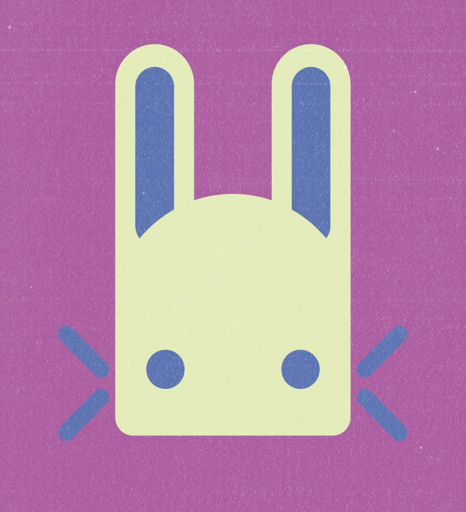

Daito.blog
Visitor number:
Still very much under construction (as you can probably tell), but making progress.
Feel free to take a look around.

Life Update
06/03/2026
Where I've been these last few weeks.
Last Watched:

Last Heard:

Last Read:

Changelog
19/3/26 - Created bar at the top of each panel
18/3/26 - Added a cool little animation to the list of articles pages
16/3/26 - Going live with overhaul of homepage, still needs work, but much happier with it from the coding perspective. Do have a few ideas for a blog post for this week, but the one I would be more likely to choose is a little mean-spirited and negative, so very much a maybe, idk yet.
8/3/26 - Probably looking to overhaul the entire frontend at somepoint soon, to make it mobile user friendly without sacrificing any of the desktop experience. I plan to still make the site designed for desktop, but having a version of it you can browse on smaller devices just makes the site more accessible.
5/3/26 - Small update to blog posts, now they have a background (details of it in blog post tomorrow). Plus site has an icon now, which will be there until I can think of something more fitting.
12/1/26 - Feel like i've made a ton of progress with the code. Still need to work on the graphics, kinda been neglecting it outside of some basic colour schemes. Did release my first blog post on saturday though, which i'm proud of! (it took so much work)
6/1/26 - Set a goal to work on this site for a bit every workday, just doing whatever. Currently it's focused on getting the base of the pages set up.
28/12/25 - Been doing multiple small updates whenever i've been up to new things, noting here that this update section is just going to be for more major updates
18/12/25 - Set up pipeline so neocities uses code from a github repo, meaning any changes I make from now on are instantly implemented
27/11/25 - Homepage updates. Also created pages for Movies and Card games, although they're not finished yet